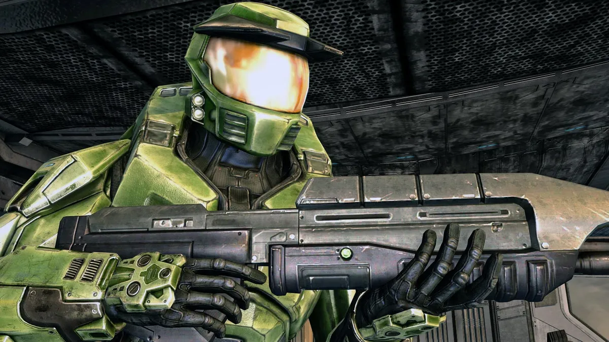
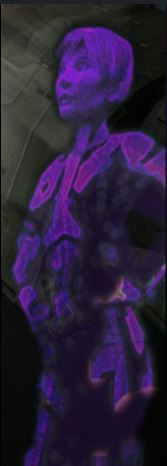

Mergi inapoi
The Pillar of Autumn
Jocul începe cu nava Pillar of Autumn fiind atacată de Covenant.
Într-o încercare disperată de a salva echipajul, căpitanul Keyes
ordonă evacuarea navei și activează protocolul de autodistrugere.
Jucătorul preia controlul asupra Master Chief, un soldat Spartan-II
modificat genetic Însoțit de inteligența artificială Cortana, Master Chief
scapă într-o capsulă de salvare și aterizează pe suprafața Halo-ului.


Urmatorul nivel